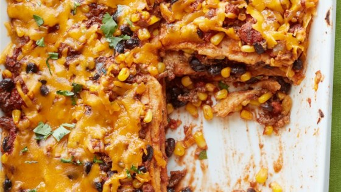

Mexican Quesadilla Casserole

Description
Ingredients
- cooking spray
- 1 pound ground beef
- ½ cup chopped onion
- 1 (15 ounce) can tomato sauce
- 1 (15 ounce) can black beans, rinsed and drained
- 1 (14.5 ounce) can diced tomatoes with lime juice and cilantro (such as RO*TEL®)
- 1 (8.75 ounce) can whole kernel sweet corn, drained
- 1 (4.5 ounce) can chopped green chiles, drained
- 2 teaspoons chili powder
- 1 teaspoon ground cumin
- 1 teaspoon minced garlic
- ½ teaspoon dried oregano
- frac12 teaspoon red pepper flakes
- 6 flour tortillas
- 2 cups shredded Cheddar cheese
Steps:
- Preheat oven to 350 degrees F (175 degrees C). Prepare a 13x9-inch baking dish with cooking spray.
- Heat a large skillet over medium-high heat. Cook and stir beef and onion in the hot skillet until beef is completely browned, 5 to 7 minutes; drain and discard grease.
- Stir tomato sauce, black beans, diced tomatoes with lime juice and cilantro, corn, and chopped green chiles into the ground beef mixture; season with chili powder, cumin, garlic, oregano, and red pepper flakes. Reduce heat to low and cook mixture at a simmer for 5 minutes.
- Spread about 1/2 cup beef mixture into the bottom of the prepared baking dish; top with 3 tortillas, overlapping as needed. Spread another 1/2 cup beef mixture over the tortillas. Sprinkle 1 cup Cheddar cheese over beef. Finish with layers of remaining tortillas, beef mixture, and Cheddar cheese, respectively.
- Bake in preheated oven until heated throughout and the cheese is melted, about 15 minutes. Cool 5 minutes before serving.